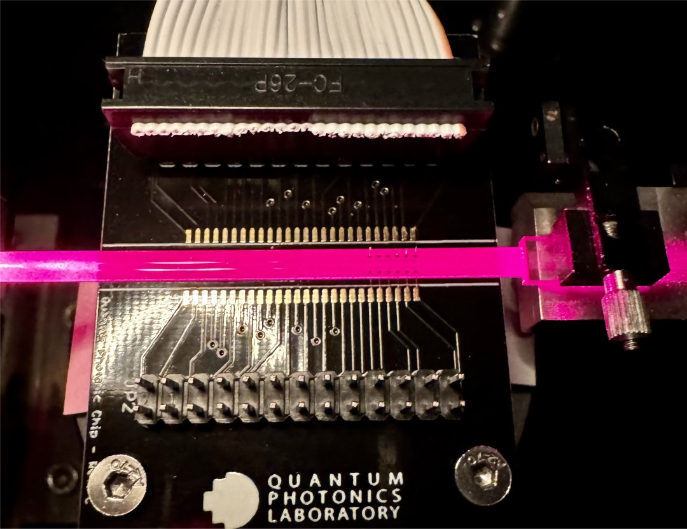
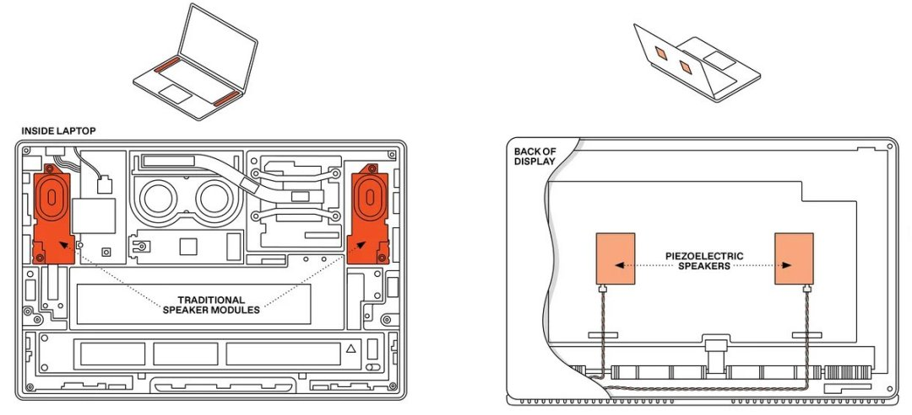
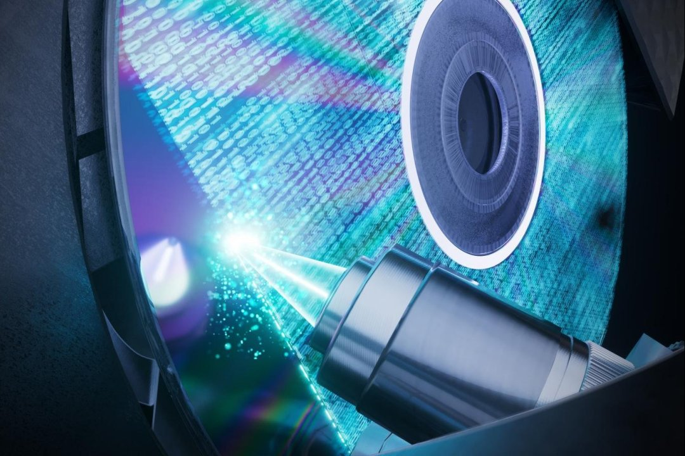
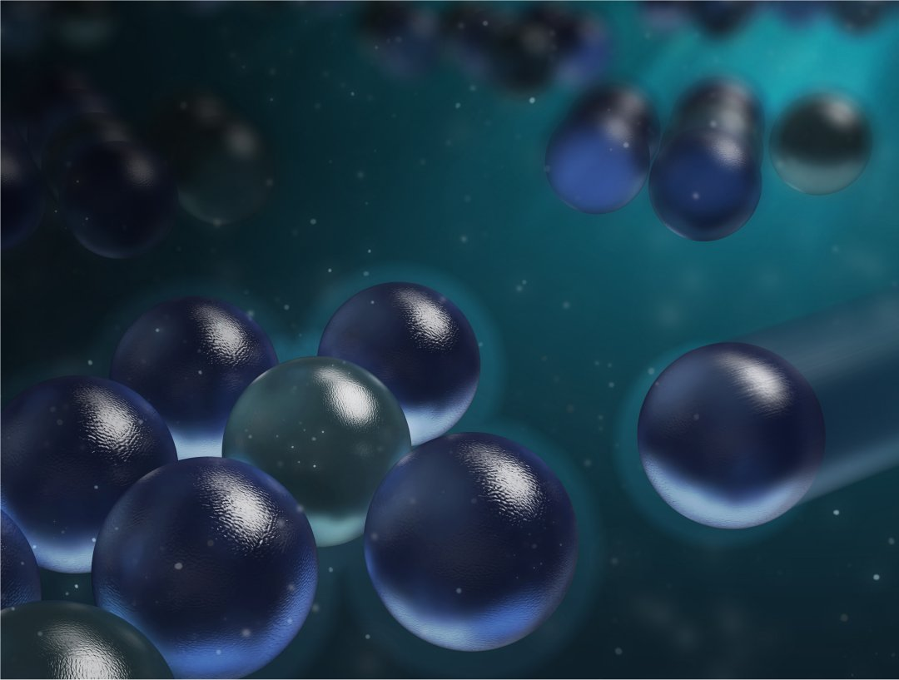

TECH NEWS
-
Primeiro processador de luz programável impulsionará computação quântica
Uma equipe da Austrália, EUA e Itália construiu o que eles garantem ser o primeiro processador de luz reprogramável. Existem várias plataformas de computação com luz, mas os processadores fotônicos resultantes são tipicamente baseados em guias de onda, uma espécie de "rodovias para a luz". Assim, são máquinas projetadas para executar uma única função.
Íntegra da notícia -
Telas dos celulares estão prestes a se tornarem alto-falantes
Uma nova tecnologia promete acabar com todos esses problemas: Transformar a própria tela em um transdutor, que possa funcionar como alto-falante ou como sensor e atuador háptico, provendo feedback. A rigor a tecnologia não é nova: seus princípios são conhecidos há décadas, mas até agora ninguém havia conseguido viabilizá-la para equipamentos portáteis.
Íntegra da notícia -
Revolução no armazenamento de dados: 10.000 Blu-rays em um disco
Pesquisadores demonstraram pela primeira vez que a capacidade de armazenamento óptico de dados pode chegar ao nível de petabit (Pb, ou 1015 bits), estendendo a arquitetura de gravação planar para três dimensões com centenas de camadas, ao mesmo tempo que quebra a barreira do limite de difração óptica dos pontos gravados. E, rompendo essa barreira, a equipe acredita dispor de toda a tecnologia para ir além.
Íntegra da notícia -
Reviravolta: Partículas de mesma carga atraem-se à distância
Nós aprendemos nas primeiras aulas de ciência que cargas elétricas de mesma carga se repelem, enquanto cargas opostas se atraem. Mas o mundo real é mais complicado do que isso: Já sabemos, por exemplo, que cargas iguais também se atraem na água e que a Lei de Coulomb pode falhar em nanoescala. Agora, Sida Wang e colegas da Universidade de Oxford, no Reino Unido, demonstraram que micropartículas com carga semelhante às vezes podem se atrair, em vez de se repelir mutuamente.
Íntegra da notícia
Novas CPU AMD lançadas em Janeiro/24
| Modelo | Clock Max. | Núcleos | Threads | TDP | AMD RYZEN IA |
|---|---|---|---|---|---|
| AMD Ryzen™ 7 8700G | 5.1GHz | 8 | 16 | 65W | Disponível |
| AMD Ryzen™ 5 8600G | 4.3GHz | 6 | 12 | 65W | Disponível |
| AMD Ryzen™ 5 8500G | 3.5GHz | 6 | 12 | 65W | N/A |
| AMD Ryzen™ 3 8300G | 3.4GHz | 4 | 8 | 65W | N/A |
- CPU TDP
- Total Delivered Power
- RYZEN IA
- O Ryzen™ AI é definido como a combinação de um mecanismo de IA dedicado, o mecanismo de placas de vídeo AMD Radeon™ e núcleos de processadores Ryzen que permitem recursos de IA
- A tecnologia de Ryzen AI é compatível com todos os processadores para desktop AMD Ryzen Série 8000G, exceto o Ryzen 5 8500G/GE e o Ryzen 3 8300G/GE. GD-233